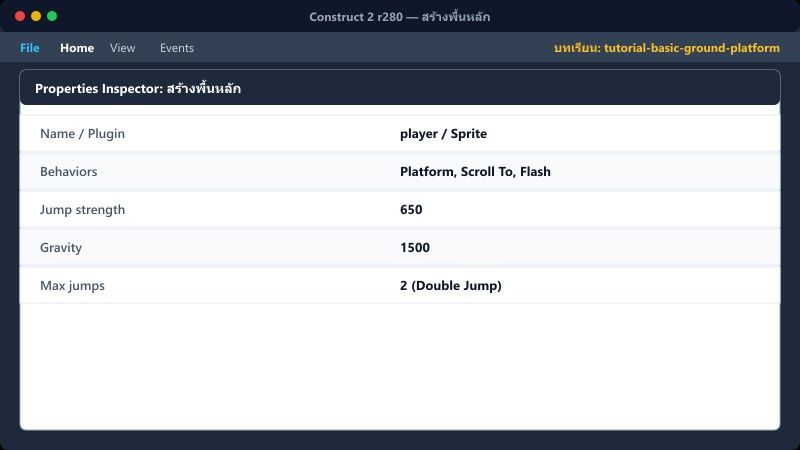
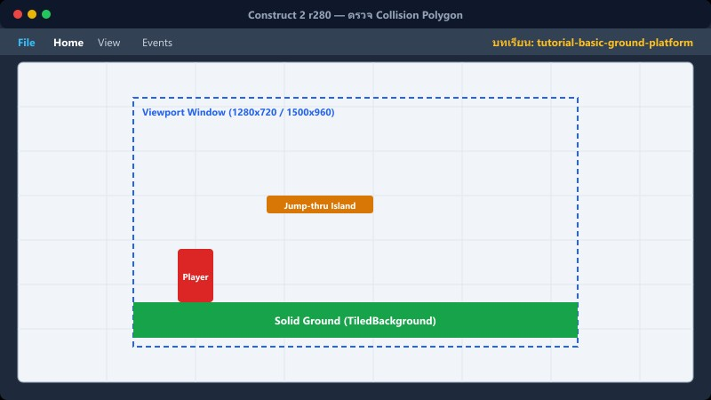
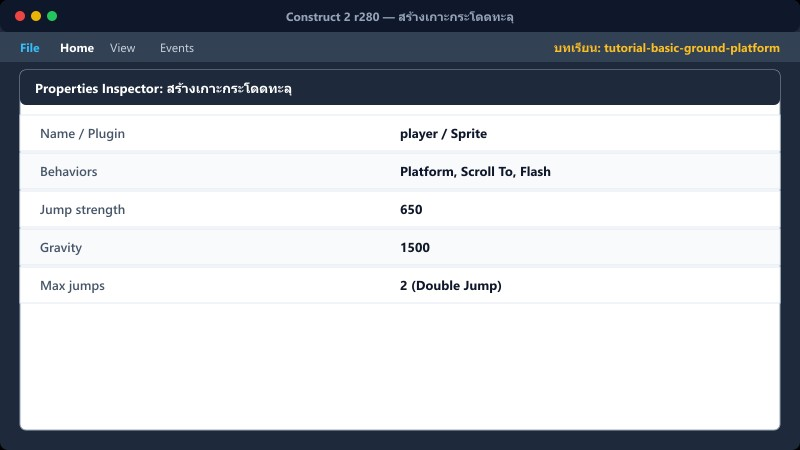
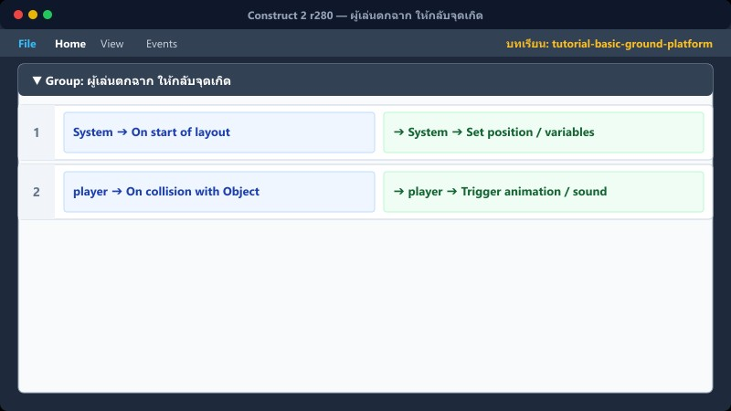
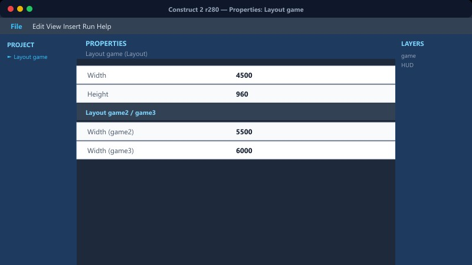
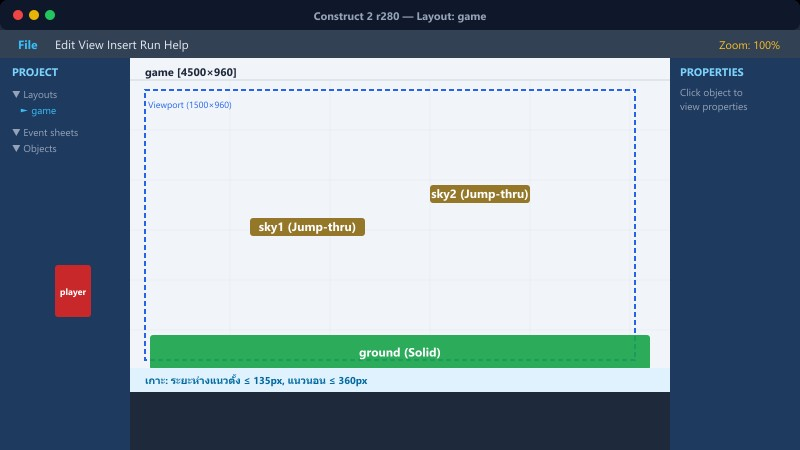
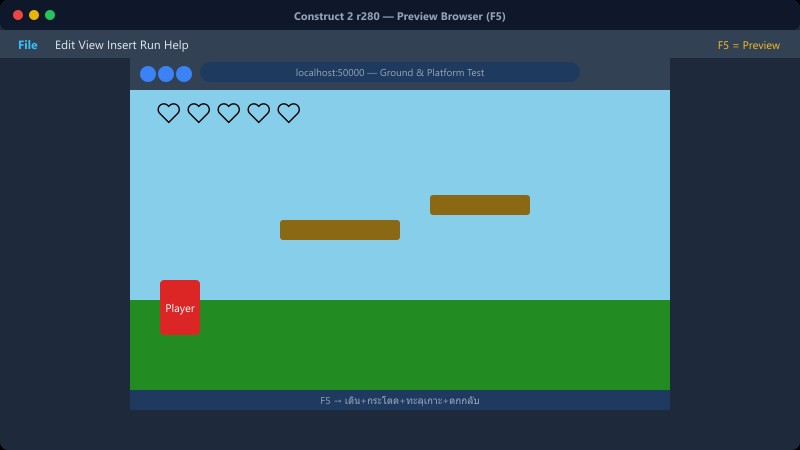

1สร้างพื้นหลัก

วาง Sprite รูปพื้นให้ต่อกันตลอดทาง แล้วตั้งชื่อว่า ground
คลิกขวาที่พื้นว่างใน Layout > Insert new object > เลือก Sprite > ตั้งชื่อ ground > คลิกวางใน Layout > โหลดภาพพื้น
จากนั้นคลิกที่ ground ใน Layout > ไปที่ Properties Panel (ซ้ายมือ) > คลิกลิงก์ Behaviors > หน้าต่าง Behaviors เด้งขึ้นมา > คลิกปุ่ม + (Add new) > เลือก Solid > กด Add
Solid ทำให้ผู้เล่นยืนบนพื้นและชนด้านข้างได้
📍 ที่ไหนใน C2: Layout game → Layer game
2ตรวจ Collision Polygon

ดับเบิลคลิก Sprite → เลือกเครื่องมือ Collision polygon
Edit collision polygon
วางจุดให้พอดีเฉพาะผิวพื้น
หลีกเลี่ยงกรอบชนใหญ่กว่าภาพ เพราะผู้เล่นจะยืนลอยหรือชนกำแพงที่มองไม่เห็น
📍 ที่ไหนใน C2: ดับเบิลคลิก Sprite
3สร้างเกาะกระโดดทะลุ

วาง Sprite เกาะ ตั้งชื่อ sky1 แล้วเพิ่ม Behavior
คลิกขวาที่เกาะ > ไปที่ Properties Panel > Behaviors > คลิก +
เลือก Jump-thru > Add
เลือก Sine > Add (ตัวเลือก: ทำให้เกาะลอยขึ้นลงได้)
ผู้เล่นกระโดดทะลุจากด้านล่าง และลงมายืนบนด้านบนได้
📍 ที่ไหนใน C2: เลือก sky1 แล้ว sky2
4ตั้งค่าผู้เล่น
เลือก Sprite player แล้วเพิ่ม Platform behavior
Properties: player (Sprite)
| Jump strength | 650 |
| Gravity | 1500 |
| Max jumps | 2 |
Max jumps = 2 คือ Double Jump ตามระบบเดิมของเกม
📍 ที่ไหนใน C2: Object player → Properties
5ผู้เล่นตกฉาก ให้กลับจุดเกิด

เพิ่มตัวแปรตำแหน่งปลอดภัย จุดเกิดX และ จุดเกิดY จากนั้นเพิ่ม Event:
▼ Group: Player Falls
1
System Compare two values: player.Y > LayoutHeight + 200
➔ player Set position to (จุดเกิดX, จุดเกิดY)
➔ System Subtract 1 from หัวใจ
บวก 200 เพื่อให้ผู้เล่นหลุดพ้นขอบจอก่อน จึงค่อยย้ายกลับ ไม่กระตุกทันทีที่แตะขอบล่าง
📍 ที่ไหนใน C2: Event Sheet
6กฎวางเกาะให้กระโดดถึง

ระยะสูงจากพื้นถึงเกาะแรก ≤ 140 px • เกาะต่อเกาะแนวตั้ง ≤ 135 px • แนวนอน ≤ 360 px
วางเส้นทางจากต่ำ → กลาง → สูง และทดลองกระโดดจริงทุกจุดก่อนวางดาวคำตอบหรือมอนสเตอร์
📍 ที่ไหนใน C2: ลากจัดวางใน Layout
7ขนาด Layout แต่ละด่าน

ด่าน 1 (game): 4500 × 960
ด่าน 2 (game2): 5500 × 960
ด่าน 3 (game3): 6000 × 960
📍 ที่ไหนใน C2: คลิกพื้นว่างใน Layout → Layout properties
⚠️ ข้อผิดพลาดที่พบบ่อย

- เกาะสูงเกินไปจนกระโดดไม่ถึง (ลืมเช็คกฎระยะห่าง)
- ผู้เล่นติดขอบเกาะเวลาเดินชน (ตั้งกรอบ Collision polygon กว้างกว่าภาพ)